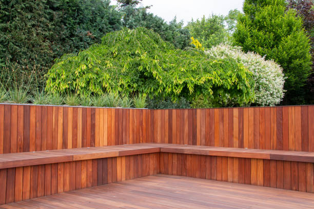

Belville North Carolina
info@superiorfenceandrail.pro
Belville North Carolina
info@superiorfenceandrail.pro

Enhance your Belville North Carolina property with durable, stylish fences. Our expert installation and repair services ensure security and curb appeal. Call us for premium fencing solutions near you today!
Click Here To Call Us (877) 848-1711Are you searching for reliable fence services in Belville North Carolina ? Our company specializes in delivering professional fence installation and repair services tailored to meet your specific needs. Whether you want to enhance privacy, improve security, or add aesthetic appeal to your property, we have the expertise to deliver exceptional results.
We offer a wide range of fencing solutions, including wood, vinyl, chain-link, aluminum, and wrought iron fences. Each type of fence is designed to serve unique purposes, from durable chain-link fences for security to elegant vinyl or wood fences for a polished, classic look. Our team uses premium materials and cutting-edge techniques to ensure your fence stands strong against time and weather conditions in Belville North Carolina .
What sets us apart? Our commitment to customer satisfaction and quality craftsmanship. We pride ourselves on offering competitive pricing, timely project completion, and personalized service to ensure your expectations are exceeded. From backyard fences for homes to large-scale commercial projects, no job is too big or small for us.
Protect your property and boost its curb appeal with a sturdy, well-crafted fence. Contact us today for a free consultation and quote! Let us be your trusted fencing partner in Belville North Carolina .
Residential & commercial Fences
Quality services at affordable prices
Immediate 24/ 7 emergency services


Looking for reliable and expert fence installation services in Belville North Carolina ? Our team is here to transform your property with durable, stylish, and secure fencing solutions tailored to your needs. We specialize in installing a wide range of fences, including wood, vinyl, chain link, aluminum, and wrought iron, ensuring the perfect match for residential, commercial, or industrial properties.
Our experienced professionals use top-quality materials and precise craftsmanship to deliver fences that stand the test of time. Whether you’re looking to boost your property’s curb appeal, enhance privacy, or improve security, our customized fence solutions are designed to meet and exceed your expectations.
At the heart of our service is a commitment to excellence. From initial consultation to final installation, we prioritize clear communication, timely delivery, and unmatched customer satisfaction. Our team also ensures compliance with local regulations and zoning requirements in Belville North Carolina making the process hassle-free for you.
Don’t settle for anything less than the best when it comes to your property’s fencing needs. Contact us today to schedule a consultation and experience why we’re the trusted choice for fence installation in Belville North Carolina . Let us help you secure and beautify your property with expert craftsmanship and unbeatable service!
Residential & commercial Fences
Quality services at affordable prices
Immediate 24/ 7 emergency services
For high-security needs, electric fencing is an innovative solution offer by Fences. Designed to deter intruders effectively, our electric fencing provides a layer of security that traditional fencing options simply can’t match. Ideal for both residential and commercial properties, electric fencing is a practical investment for those seeking maximum protection.
Our team is trained in the latest electric fencing technologies and will ensure that your installation complies with all local regulations and safety standards. We provide a thorough consultation to evaluate your property’s unique requirements and customize the installation accordingly. Count on Fences for superior electric fencing solutions —protection that keeps you safe while offering peace of mind.

If you’re looking for a stylish, sustainable way to enhance your outdoor space, consider bamboo fencing. At Fences, we offer professional bamboo fence installation that brings a unique flair and natural beauty to your property. Bamboo is not only aesthetically pleasing, it is also incredibly strong and durable, making it an excellent choice for privacy and security.
Our bamboo fencing can be customized to various heights and styles, providing the perfect blend of functionality and design. Additionally, bamboo is an eco-friendly material, aligning with sustainable landscaping practices. Our trained team handles every phase of the installation with care, ensuring a high level of service and quality craftsmanship. Choose Fences for bamboo fence installation and transform your outdoor space with our elegant fencing solutions.

Wrought iron fencing is the epitome of elegance and tradition, renowned for its beauty and durability. At Fences, we offer both restoration and installation services for wrought iron fences, preserving the charm of your property while ensuring lasting strength. Whether you're looking to restore an existing wrought iron fence to its former glory or install a new one, our skilled team is equipped to meet your needs.
Our restoration process involves careful assessment and repairs, addressing issues such as rust, structural integrity, and paint finish. For new installations, we provide a diverse range of designs and styles, ensuring that your wrought iron fence complements your property flawlessly. When you choose Fences for wrought iron services in Belville North Carolina you are opting for unparalleled craftsmanship and a commitment to excellence.

No two properties are alike, and at Fences, we understand that your fencing needs are unique. Our custom fence design and build services allow you to create a fencing solution that perfectly matches your property’s style, security requirements, and functional needs. From classic designs to modern aesthetics, our team works with you to bring your vision to life.
We start with a comprehensive consultation, discussing your ideas, preferences, and any specific challenges presented by your site. Our skilled designers then create custom plans that reflect your vision while adhering to local regulations. Expert installation follows, ensuring your fence is not just a border but a stunning enhancement to your property. Trust Fences for custom fence solutions that truly stand out.

Safety and security for your horses and livestock are critical, and at Fences, we specialize in providing fencing solutions tailored for farms. Our horse and livestock fencing options ensure that your animals are safely contained while providing a sturdy barrier against intrusions. Our solutions are durable and designed to withstand the specific challenges of weather and animal behavior.
We provide various options including wooden, electric, and high-tensile fencing, each tailored to meet your unique farm needs. Our experienced team can advise you on the best fencing types based on your livestock and property layout, ensuring safety and functionality. Choose Fences for your horse and livestock fencing needs in Belville North Carolina and protect your animals with fencing you can trust.
Enhance the beauty of your garden or landscape with decorative fencing solutions from Fences. Our garden and landscape fencing options not only improve aesthetics but also protect your plants from unwanted intrusions.
Whether you prefer charming picket fences, decorative wrought iron, or low-maintenance vinyl, we've got options that will perfectly suit your landscaping style. Our team is experienced in creating customized solutions that fit your property’s design and layout.
When you choose us, you can expect quality materials and professional installation that adapts to your unique garden features. Fencing is crucial for defining borders while adding a touch of elegance to your outdoor space.
Get in touch with Fences for garden and landscape fencing . Let us help you create a beautiful and functional space that is as inviting as it is protective. Transform your garden into a visually stunning masterpiece with our expertly crafted fencing solutions.

In our busy world, finding peace and quiet in your home or business might seem impossible. Noise reduction fencing provides an effective solution to block unwanted sounds and create a more serene environment. At Fences, we specialize in noise reduction fencing installation offering tailored solutions designed to enhance your comfort and tranquility.
Our noise reduction fences are constructed using specially designed materials designed to absorb and deflect sound waves, effectively minimizing external noise. This type of fencing is ideal for homes located near busy roads, commercial properties, or any other noisy environments.
We understand that soundproofing requires careful planning and installation to be effective, and our experienced team is adept at assessing your specific needs. We collaborate with you to design a fencing solution that fits your environment and provides optimal sound reduction.
What distinguishes Fences is our expertise in noise reduction techniques and commitment to customer satisfaction. We believe in delivering solutions that truly enhance your quality of life, ensuring your investment provides the intended peace and quiet.
Invest in your comfort with professional noise reduction fencing from Fences. Let us help you create a tranquil outdoor space where you can relax and enjoy your surroundings undisturbed.

For an elegant yet durable fencing option, ornamental steel fencing is the perfect solution for enhancing your property’s perimeter. At Fences, we specialize in ornamental steel fencing installation that combines beauty with strength.
Our ornamental steel fences come in a variety of designs, allowing you to create a fence that matches your property style while offering the security you need. The durability of steel ensures that your investment will withstand the test of time, requiring minimal maintenance over the years.
Our expert installation team is dedicated to delivering quality craftsmanship that exceeds industry standards. We work with each client to ensure that their unique design vision and practical needs are met.
Choosing Fences for ornamental steel fencing ensures that you receive a top-notch product and service. Join the many satisfied customers who have enhanced their properties with our beautiful ornamental steel solutions backed by a commitment to quality.

For maximum security and durability, stone and concrete fencing present the perfect solution for property owners in Belville North Carolina . These robust materials are well-suited for both residential and commercial properties, providing a solid barrier against noise and unwanted intrusion. Our stone and concrete fencing services involve expert installation and design that considers aesthetics and functionality. With a commitment to using high-quality materials, we ensure your fencing will withstand the elements and provide long-lasting security. Trust us to deliver impressive results that enhance the integrity and safety of your property.
Years Experience
Expert Technicians
Satisfied Clients
Compleate Projects
When it comes to installing high-quality fences in Belville North Carolina Superior Fence is your go-to provider for reliable, durable, and aesthetically pleasing solutions. We understand that your property deserves the best, and that's why we offer a wide range of fence options tailored to suit your specific needs. From privacy fences to decorative options, we ensure every installation enhances the beauty and security of your property.
Our team at Superior Fence is committed to providing exceptional service, with years of expertise in the fencing industry. We use only the highest quality materials, ensuring that your fence not only looks great but lasts for years to come. Whether you're looking to secure your backyard, increase privacy, or improve your property's curb appeal, we offer expert guidance and top-notch craftsmanship.
What sets us apart in Belville North Carolina is our attention to detail and personalized approach. We work closely with each client to understand their vision and provide customized fencing solutions that fit their style and budget. Additionally, our transparent pricing and punctual service ensure you’re getting the best value for your investment.
With a reputation for excellence and a commitment to customer satisfaction, Superior Fence is the trusted name in fencing across Belville North Carolina . Let us help you create a secure, beautiful environment for your home or business. Choose Superior Fence—where quality meets reliability.
In an increasingly connected world, privacy has become a priority for homeowners . A privacy fence acts as a serene shield, allowing you to enjoy your outdoor space without concerns about prying eyes. Our expert installation services ensure your privacy fence is not only functional but also aesthetically pleasing. We utilize high-quality materials such as wood, vinyl, and composite options that promise durability and style, perfectly catering to the unique climate and aesthetic preferences of Belville North Carolina . With our dedicated team, we handle everything from planning to installation, ensuring a seamless process that honors your property lines and local regulations. Choose us for our attention to detail, customer service, and experience that guarantees complete satisfaction with your new privacy fence.
Wooden fences have an exquisite charm that can enhance the curb appeal of any residential or commercial property. However, like any outdoor structure, wooden fences can succumb to the elements, leading to deterioration over time. At Fences, we provide expert wooden fence repair and installation services tailored to meet the diverse needs of our Belville North Carolina clientele.
Our team of seasoned professionals understands the nuances of wooden fence installation. We work efficiently to ensure your new fence not only looks stunning but also stands the test of time. We offer a wide variety of styles and finishes, allowing you to customize your fence to fit your specific tastes and surrounding landscape.
In the event of damage, our wooden fence repair services will restore your fence's integrity and beauty. Whether it’s fixing damaged boards, replacing posts, or addressing rot and insect infestations, we apply effective techniques to bring your fence back to life. We use high-quality materials and provide solutions that not only resolve immediate issues but also prevent future problems.
Why choose Fences for your wooden fence needs in Belville North Carolina ? Our commitment to excellence and customer satisfaction is unmatched. We recognize that each project is unique, and we approach every job with personalized attention. Our transparent pricing model ensures no hidden fees, giving you peace of mind.
Don't let a damaged fence detract from your property. Our dedicated team will help you choose the right wood type and design that aligns with your budget and vision. With our experience and dedication to quality workmanship, we guarantee that your wooden fence will be a stunning addition to your property. Choose us for professional, reliable wooden fence repair and installation services in Belville North Carolina —your satisfaction is our priority.
Vinyl fencing is becoming increasingly popular due to its durability, low maintenance, and aesthetic flexibility. At Fences, we offer a comprehensive range of vinyl fencing services, from installation to repair and maintenance. Our vinyl fences provide a sleek and modern look that complements any property style, making them an ideal choice for homeowners who prioritize both beauty and practicality.
One of the significant advantages of vinyl fencing is its resistance to weathering and pests. Unlike wood, vinyl will not rot, warp, or splinter, giving you peace of mind for years to come. Our experienced team is committed to delivering flawless installation that ensures a secure and sturdy structure. We also provide ongoing maintenance services to keep your vinyl fence looking as good as new. With our extensive knowledge of vinyl fencing options, we help you choose colors and styles that will match your home perfectly. Trust Fences for your vinyl fencing solutions and discover why we are the go-to experts in the area.
Chain-link fencing is an effective solution for both residential and commercial properties, offering visibility and security. Our chain-link fence installation services in Belville North Carolina provide strong and durable fencing options that can adapt to various heights and configurations to meet your specific needs. Ideal for securing yards, playgrounds, or industrial facilities, chain-link fences are a budget-friendly way to protect your property while maintaining visibility. They require minimal maintenance and can be coated with vinyl for added aesthetics and rust resistance. With our expertise and customer-first approach, we ensure you're fully satisfied with your chain-link fence solution.
If you’re looking for a fencing option that combines elegance with durability, decorative aluminum fencing is an excellent choice. Our aluminum fencing services offer a stylish solution that enhances your property without compromising security. Lightweight yet robust, aluminum fences are resistant to corrosion and rust, making them ideal for the varying climates of Belville North Carolina . With a wide array of designs and colors to choose from, we can customize your aluminum fence to align with your desired aesthetic preferences. Choose us for a professional installation experience characterized by quality, elegance, and unparalleled customer service.
The classic picket fence is a timeless symbol of Americana, and at Fences, we believe it’s a perfect choice for homeowners in Belville North Carolina wanting to add charm and character to their properties. Our picket fence installation services transform ordinary yards into picturesque landscapes.
Our picket fences are customizable, offered in a variety of materials and styles, from traditional wood to low-maintenance vinyl. Whether you want to create a safe space for your children and pets or simply enhance your property’s appearance, we have the perfect solution for everyone.
With years of experience, our team delivers expert craftsmanship, ensuring every fence we install is sturdy and aesthetically appealing. We prioritize using quality materials while also providing you with a broad range of options that suit your budget and design preferences.
When you choose Fences, you’re choosing dedicated professionals committed to delivering exceptional results. Join our satisfied customers by selecting us for your picket fence installation needs; let’s create a warm and inviting outdoor space together.
Split rail fencing is a rustic and attractive option for homeowners seeking a more beautiful way to define their property boundaries. At Fences, we specialize in split rail fencing, providing a charming way to blend functionality with landscape aesthetics. This style of fencing is ideal for larger properties or homes located in more rural areas of Belville North Carolina offering a classic countryside appeal.
Our split rail fences are made from the finest wood materials, ensuring resilience against the elements while providing minimal obstruction to your views. Installation is handled by our skilled team, who take care to position the rails securely for safety and stability. Unlike traditional fencing options, split rail allows you to maintain openness while still marking your property line clearly. Trust Fences for your split rail fencing needs and let us help you create the rustic retreat you’ve always wanted.
Keeping your fence in top condition is essential for its longevity and appearance. At Fences, we offer professional fence staining and maintenance services designed to protect and enhance your investment. Regular maintenance not only preserves the aesthetic appeal of your fence but can also prevent costly repairs down the line.
Our comprehensive maintenance services include cleaning, staining, and repairing to keep your fence looking brand new. We offer a variety of stains and sealants that are UV resistant, protecting your wood from fading and weather damage. Our team has the experience and knowledge to recommend the best products for your specific fence type and environment, ensuring optimum results. When it comes to fence staining and maintenance in Belville North Carolina Fences stands out for our exceptional service and commitment to quality.
Keeping your loved ones safe is a top priority, especially when it comes to pool areas. At Fences, we specialize in pool safety fence installation, creating secure barriers that protect children and pets from accidental drownings while complementing your outdoor space aesthetically. Our pool fences are designed to adhere to local safety regulations, ensuring peace of mind for your family.
We offer various materials and designs, from mesh fences that blend seamlessly into your backyard to decorative aluminum options that provide both safety and style. The installation process is straightforward; our professional team will ensure that your pool safety fence is secure, effectively keeping your pool area safe without sacrificing beauty. Choose Fences for your pool safety fence needs and enjoy a safe, beautiful environment for your family and friends.
Keeping your beloved pets safe while allowing them the freedom to roam is a priority for many homeowners. Our pet containment fencing services specialize in creating secure environments for your pets. Whether you need a complete fence or a specialized containment system, we offer various options to suit different pet sizes and behaviors. Our fences are designed to be durable and sturdy while aesthetically pleasing to match your home. With our team’s expertise and personalized service, you can trust that your pets will be safe and secure within their designated areas. Choose us for our knowledge and passion for pet safety in fencing.
In today’s world, the security of your business premises is of utmost importance. Security fencing provides a physical barrier that deters potential intruders and protects your assets. At Fences, we offer comprehensive security fencing solutions for businesses across Belville North Carolina tailored to meet the needs of various commercial applications.
Our security fencing options are designed to withstand impacts and resist tampering, providing an added layer of protection for your business. We offer various materials, including chain-link, ornamental steel, and barbed wire, allowing you to choose the best solution that fits your specific security needs while maintaining an attractive appearance.
Our expert installation team is dedicated to providing high-quality workmanship, ensuring your fencing is installed for maximum effectiveness. We understand that every business has unique security requirements, and our team will collaborate closely with you to assess your needs and recommend the most appropriate fencing solution.
What sets Fences apart from other fencing contractors is our commitment to client satisfaction and our extensive experience in the industry. We prioritize clear communication throughout the installation process, ensuring you are informed about the timeline, pricing, and any challenges we might encounter.
Choosing our security fencing services means investing in the protection and peace of mind that your business deserves. We understand the importance of securing your premises, and our high standards of quality and customer service reflect our dedication to helping you achieve your security goals .
Protect your business today with a tailored security fencing solution by Fences. Together, we can create a secure environment for your operations and enhance the safety of your assets.
Industrial settings require robust and reliable fencing solutions to protect assets and ensure safety. At Fences, we provide specialized industrial chain-link fence installation, tailored specifically for warehouses, manufacturing plants, and distribution centers.
Our chain-link fences are engineered for durability and strength, providing secure perimeters that hold up against harsh weather conditions and heavy traffic. We use high-quality materials and state-of-the-art techniques to ensure that your fence meets the specific demands of an industrial environment.
With our extensive experience in the field, we understand the unique requirements of industrial fencing and will work with you to deliver solutions that are both effective and compliant with industry standards. Our commitment to timely and professional service sets us apart, ensuring minimal disruption to your operations during installation.
When it comes to securing your industrial property in Belville North Carolina trust Fences to provide fencing solutions that protect your investments and keep your premises safe. Our reputation for reliability and excellence makes us the preferred choice for businesses in need of industrial fencing solutions.
Keeping your construction site secure and compliant with local regulations is essential during every phase of a project. At Fences, we specialize in temporary fencing solutions designed to safeguard your site while minimizing liability and ensuring safety.
Our temporary fences are quick to set up, durable, and adjustable to fit the various dimensions of your project. Whether you need to restrict access to a short-term site or define a longer-term construction zone, our solutions can be tailored to your specific needs, including options for fully enclosed and open fencing.
Choosing our services means benefiting from our experience and expertise. We understand local regulations regarding construction site fencing and ensure compliance to keep your project moving without delays. Our dedicated team provides ongoing support and service to ensure your fencing remains effective throughout the project duration.
Join the ranks of satisfied construction companies who have relied on Fences for their temporary fencing needs. Let us help you maintain a secure and professional worksite, enhancing safety for your employees and the public.
For businesses looking to balance aesthetic appeal with effective security, aluminum fencing is an excellent choice. At Fences, we provide commercial aluminum fencing solutions that offer durability, low maintenance, and an elegant appearance.
There are numerous advantages to selecting aluminum fencing for your commercial property, such as resistance to rust and corrosion, which means it will look great for years to come without intensive upkeep. Our aluminum fences come in various designs tailored to fit your branding and needs, providing an attractive perimeter that meets security demands.
Our team is committed to delivering high-quality fencing installation, using only the finest materials and methods to ensure your fence stands the test of time. We work collaboratively with you to understand your property requirements, ensuring optimal functionality and safety.
Choosing Fences means trusting a partner dedicated to quality service and customer satisfaction. With many successful projects completed we have earned a reputation as the go-to provider for commercial aluminum fencing solutions.
In an increasingly security-conscious world, effective access control and gate systems are vital for protecting residential and commercial properties. These systems provide a barrier against unauthorized individuals while offering convenience for authorized users. At Fences, we specialize in cutting-edge access control and gate systems installation in Belville North Carolina ensuring your property remains secure yet accessible.
Our range of access control solutions includes automated gates, key card readers, intercom systems, and more. We work with state-of-the-art technology to provide you with customizable options that meet your security needs. Whether you require a simple manual gate or a sophisticated electronic access control system, our team can design and install a solution that fits perfectly with your property.
The importance of professional installation cannot be overstated. Our experienced technicians ensure that your access control and gate systems are installed correctly, providing you with seamless integration for both security and convenience. We consider site conditions and your specific requirements to deliver a solution that works flawlessly.
Choosing Fences means opting for a partner dedicated to your security needs. Our commitment to customer service and satisfaction drives us to provide tailored solutions that exceed your expectations. We take the time to understand your needs, delivering clear communication throughout the project and ensuring you are completely satisfied with the results.
Enhance the security of your property with superior access control and gate systems from Fences. Let us help you create a safe and secure environment —contact us today to learn more about our services and schedule a consultation.
For external properties requiring heightened security, barbed wire fencing is often the best solution. Our barbed wire fence installation services in Belville North Carolina are designed to deter intruders and protect property lines effectively. Commonly used in agricultural settings and industrial sites, barbed wire fencing stands resilient against external threats. We prioritize a strong foundation and quality materials during installation to ensure reliability in protecting your assets. With extensive experience in the field, we guarantee professional service that adheres to safety standards. Choose us for durable, efficient, and proven barbed wire fencing solutions tailored to meet your needs.
Privacy fencing is essential for commercial properties seeking to protect their assets while maintaining an inviting environment. At Fences, we offer specialized commercial privacy fencing solutions that combine security with style.
Our privacy fences are available in various materials, including wood, vinyl, and composite materials, catering to the specific requirements of your property. They provide an effective barrier against noise, prying eyes, and traffic, allowing you to create a serene environment for employees and clients.
We understand the importance of timely installation and minimal disruption to your business operations. Our skilled team works with you to ensure a seamless experience from design to implementation, providing quality workmanship that meets your timeline and requirements.
By choosing Fences, you benefit from our dedication to precision and customer satisfaction. Let us help you create a safe and attractive space in Belville North Carolina with our commercial privacy fencing. Your business deserves the best in security and aesthetics.
Security is a significant concern for both residential and commercial properties, and an anti-climb fence is an effective solution for safeguarding your premises. At Fences, we specialize in anti-climb fence installation that acts as a robust security barrier while offering peace of mind.
Our anti-climb fences are designed with specific features that prevent unauthorized access, including pointed tops and closely spaced pickets. We assess your security needs carefully and provide a tailored approach that fits with your landscape and architectural style. With our professional installation team, you can trust that your anti-climb fence will not only deter intruders but also enhance the overall look of your property. Choose Fences for anti-climb fencing and protect what matters most to you.
The security of industrial facilities is paramount, and at Fences, we offer specialized perimeter fencing solutions designed to secure your operations efficiently. Our perimeter fencing options include chain-link, barbed wire, and solid privacy fencing, ensuring your facility is well protected against unauthorized access.
Our experienced team works diligently to assess your facility's unique vulnerabilities and provide tailored fencing solutions that meet your specific requirements. We understand the importance of a durable and compliant fence for your operations. When you choose Fences for your perimeter fencing needs you are partnering with a team dedicated to your security and operational success.
In any warehouse or storage unit operation, security is a top priority. At Fences, we specialize in providing robust fencing solutions that secure your valuable assets. Our team understands the unique challenges faced by warehouse operations and is committed to delivering reliable fencing that meets your specific needs.
We offer a variety of fencing options including chain-link, privacy fencing, and temporary fences that can be used for construction or seasonal projects. Our expert installation services ensure that your warehouse and storage units are secured against theft and unauthorized access with minimal disruption to your operations. Choose Fences for fencing solutions tailored for warehouses and storage units in Belville North Carolina —security that you can depend on.
In an age of environmental consciousness, choosing eco-friendly fencing solutions is essential for homeowners and businesses alike. At Fences, we offer a range of sustainable fencing options that are not only friendly to the planet but also durable and stylish. Our eco-friendly materials include recycled wood, composite materials, and bamboo that provide a unique aesthetic while offering superior strength.
Our team is passionate about responsible practices, ensuring that our installation methods also minimize environmental impact. We work with you to determine the best eco-friendly fencing options that suit your needs and blend seamlessly with your landscape. By choosing Fences for your eco-friendly fencing solutions you are making a positive choice for both your property and the environment.
Choosing the right fencing materials for Belville North Carolina 's unique climate is essential to ensure durability, functionality, and style. Whether you're enhancing your property's security, privacy, or curb appeal, high-quality fencing materials make all the difference. At Fences, we specialize in offering fencing solutions designed to withstand Belville North Carolina 's weather conditions, including intense sun, high humidity, and occasional heavy storms.
Durable and Weather-Resistant Materials
Our premium fencing options include vinyl, aluminum, and treated wood, which resist warping, cracking, and fading even under Belville North Carolina 's extreme heat. These materials not only maintain their appearance over time but also require minimal maintenance, saving you time and effort.
Stylish Options for Every Property
From sleek modern designs to traditional styles, we offer fencing options that complement any property. Choose from privacy fences, picket fences, and ornamental styles to suit your preferences. Our materials are available in various colors and finishes, ensuring a perfect match for your home or business.
Expert Installation and Customization
We understand that every property is unique. That’s why we provide tailored fencing solutions to meet your specific needs. Our skilled team handles everything from design consultation to installation, ensuring a seamless process and flawless results.
Invest in fencing materials built to endure Belville North Carolina 's climate while enhancing your property’s value and security. Contact us today to explore our high-quality options and get started on your fencing project!
Belville is a town in Brunswick County, North Carolina, United States. The population was 1,936 at the 2010 census, up from 285 in 2000. It is part of the Wilmington, NC metropolitan area.
Yes, our fences are designed to keep your pets safe and secure in your Belville North Carolina yard.
Absolutely! Contact Superior Fence to schedule a convenient consultation for your fencing project .
Yes, Superior Fence offers fence installation services for both residential and commercial properties in Belville North Carolina .
The lifespan depends on the material used. Wood fences typically last 10-15 years, while vinyl and aluminum fences can last 20+ years .
Superior Fence is known for exceptional craftsmanship, high-quality materials, and outstanding customer service in Belville North Carolina .
Absolutely! Our fences are made with high-quality materials designed to withstand the climate and weather conditions .
Yes, we have the expertise to install fences on uneven or sloped terrains in Belville North Carolina .
Popular styles in Belville North Carolina include picket fences, privacy fences, and decorative aluminum fences.
Superior Fence installs a wide variety of fences in Belville North Carolina including wood, vinyl, chain-link, aluminum, and privacy fences tailored to your specific needs.
Our experts will help you choose the ideal fence based on your needs, preferences, and property style .
Privacy fences offer seclusion, enhanced security, and noise reduction, making them an excellent choice for homes .
Absolutely! We provide a variety of colors and finishes to ensure your fence complements your Belville North Carolina property.
Maintenance varies by material. We provide guidance on cleaning, staining, and repairs to keep your fence in top shape .
Yes, we offer staining and painting services to enhance the appearance and durability of your fence .
Simply contact Superior Fence to schedule a consultation and begin your fencing project in Belville North Carolina .
The timeline for fence installation depends on the type and size of the project, but most installations are completed within 1-3 days.
Yes, Superior Fence provides professional fence repair services in Belville North Carolina to restore the functionality and appearance of your fence.
Yes, Superior Fence provides free, no-obligation quotes for all fence installation projects .
Yes, Superior Fence offers custom fence designs to match your property’s style and requirements.
Yes, we design our fences with safety in mind to protect children in your Belville North Carolina property.
Yes, we use eco-friendly materials and processes to minimize the environmental impact of our fences .
Fence installation costs vary based on material, size, and design. Contact Superior Fence for a competitive quote tailored to your Belville North Carolina project.
Depending on local regulations, you may need a permit to install a fence . We can help you navigate the permitting process.
Yes, Superior Fence offers fence removal services as part of your installation project .
Yes, we provide warranties on materials and workmanship for all fences installed .
Yes, Superior Fence specializes in installing pool fences that meet safety standards in Belville North Carolina .
Yes, Superior Fence is experienced in meeting HOA guidelines and can ensure your fence complies with regulations .
We accept a variety of payment methods, including credit cards, checks, and financing options for projects .
Yes, we offer flexible financing options to make your fence installation affordable .
We offer a range of fence heights to meet your privacy and security needs typically from 4 to 8 feet.
The team at Superior Fence in Belville North Carolina did an exceptional job. Our new fence looks beautiful, and the installation process was seamless. We are very happy with their work and would not hesitate to use them again!
Profession
From the first consultation to installation, Superior Fence in Belville North Carolina provided exceptional service. They understood exactly what we needed and delivered it with precision. Our new fence is solid, secure, and looks fantastic. Highly recommend them!
Profession
Superior Fence in Belville North Carolina did an amazing job with our fence installation. The crew was on time, friendly, and professional. The final result was exactly what we wanted. We’re very happy with our new fence!
Profession
Belville NC Fences Pros
(877) 848-1711
info@superiorfenceandrail.pro
09.00 AM - 09.00 PM
09.00 AM - 12.00 PM